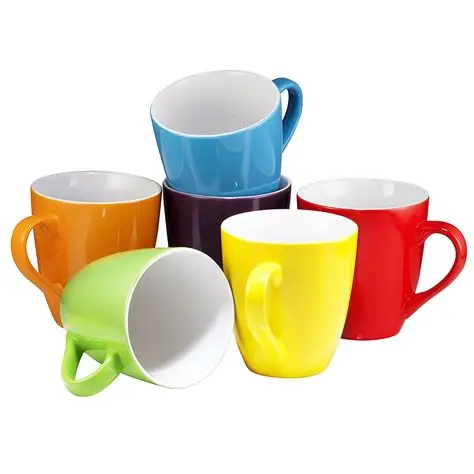

Mugs are a type of cup, which are then a type of container used to carry liquids.
Nowadays, mugs are typically associated with hot liquids, like tea, coffee, or hot chocolate.
Mugs are really cool, and they can come in many shapes, sizes, and colors much like other housewear and
utensils as well.
Some come with inspirational quotes, family pictures, or funny puns and jokes.
Here are some types of mugs that I found online.
- Travel mugs
- Beer stein
- Tiki mugs
- Amusement mugs
- Surprise mugs
- Puzzle mugs
And many more... you can check them out in the resources page.
Mugs can also be used to carry a variety of liquids. Including:
- Water
- Tea
- Coffee
- Hot chocoalte
- Warm milk
- Beer
In conclusion, if you would like to purchase a new piece of kitchenware to hold
(typically) hot liquids, I highly recommend opting for mugs. They also have handles so you don't burn
yourself!